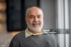

OdiCovSamen sterk tegen het virus!


Najaarscampagne
In samenwerking met het ministerie van Volksgezondheid lanceert OdiCov een najaarscampagne waarbij we de burger een toegankelijk platform aanbieden om zich aan te melden voor een vaccinatie. Deze site maakt het mogelijk dat je per regio een afspraak kan maken bij de door u gekozen arts op 1 van de beschikbare tijdstippen.
Vaccinaties zijn belangrijk, je hele leven lang
Om ernstige ziekten en epidemieën te voorkomen, nodigt OdiCov alle mensen uit die een hoger risico lopen om ernstig ziek te worden door corona om zich kosteloos te laten vaccineren. In de strijd tegen het coronavirus kunnen er een aantal maatregelen tegelijkertijd worden genomen. Naast de beschermende maatregelen, zoals het dragen van een masker, ventilatie, testen, enzovoort, is het vaccin een van de beste manieren om je te beschermen tegen opname in het ziekenhuis of overlijden door COVID-19. Door het vaccin maakt je lichaam antistoffen aan. Die stoffen helpen om tegen de deeltjes van het virus te vechten. Kom je later in contact met het virus? Dan beschermen de antistoffen jou.
Wat maken wij mogelijk?
- Vlotte registratie
- Dokter naar keuze
- Afspraak naar keuze
Wie doet wat binnen het vaccinatiebeleid?
- In België stelt de werkgroep vaccinaties van de Hoge Gezondheidsraad aanbevelingen op voor vaccinaties en voor een vaccinatiekalender voor kinderen en jongeren. Die dienen als basis voor wat toegepast wordt in de vaccinatieprogramma’s van de Vlaamse, Franstalige en Duitstalige gemeenschap.
- De Vlaamse Vaccinatiekoepel adviseert de Vlaamse minister van Welzijn, Volksgezondheid en Gezin over het toepassen van de aanbeveling van de Hoge Gezondheidsraad. De Vaccinatiekoepel bestaat uit vertegenwoordigers van de verschillende groepen vaccinatoren (bv. huisartsen, kinderartsen, gynaecologen, Kind en Gezin, Centra voor Leerlingenbegeleiding, arbeidsgeneeskundige diensten, …) en uit de wetenschappelijke wereld.
- De Vlaamse minister van Welzijn, Gezin, Volksgezondheid en Armoedebestrijding tekent het vaccinatiebeleid uit: hij bepaalt de doelgroepen en kostprijs, informeert de bevolking, kiest de verdelers …
- Zorg en Gezondheid coördineert de uitvoering van het vaccinatieprogramma in Vlaanderen.
- Een mobiel vaccinatieteam biedt de mogelijkheid om minder goed gevaccineerde groepen te informeren over het belang van vaccinaties en hen gratis in te enten.
- Kind en Gezin staat in voor vaccinatie van de allerkleinsten. Al in het ziekenhuis krijgen de pas bevallen mama's bezoek van iemand van Kind en Gezin met wat uitleg. Op de consultatiebureaus worden de eerste vaccins toegediend vanaf de leeftijd van 8 weken. Bij Kind en Gezin betaal je niet voor die consultaties.
- De Centra voor Leerlingenbegeleiding (CLB) staan in voor de opvolging van de schoolgaande kinderen en jongeren. Zij verwittigen de ouders dat hun kinderen in bepaalde leerjaren een aanbevolen vaccinatie kunnen krijgen. Zelf bieden ze de mogelijkheid om deze vaccinatie toe te dienen met de anderen kinderen van de klas. Ook hier betaal je niet voor de raadpleging.
- Je hebt natuurlijk ook de keuze om jezelf of je kind door een huisarts of kinderarts te laten vaccineren. Ook zij kunnen de vaccins van het vaccinatieprogramma gratis bestellen via Vaccinnet. Wel betaal je dan de raadpleging, waarvan je wel een gedeelte terugbetaald krijgt van de mutualiteit.
Recensies
-
Nathalia Z.
Ik heb via OviCod gemakkelijk een afspraak kunnen maken. Zeer tevreden.
◷ 6min geleden
-
Ibrahim A.
OviCod heeft het voor mij gemakkelijk gemaakt om een afspraak te kunnen maken. Ik ben zelf weinig vertrouwd met het internet maar op dit plafform ging dit heel vlot.
◷ 5u geleden
-
Ewald D.
Zeer tevreden en efficiënte site. Doe zo voort!
◷ 13u geleden
-
Sophie R.
Mijn vriendin heeft deze site aangeraden en ik ben heel tevreden over deze site, gemakkelijk en eenvoudig in te vullen.
◷ 2 dagen geleden